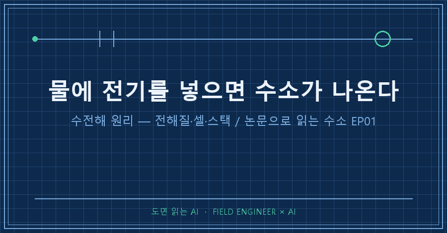
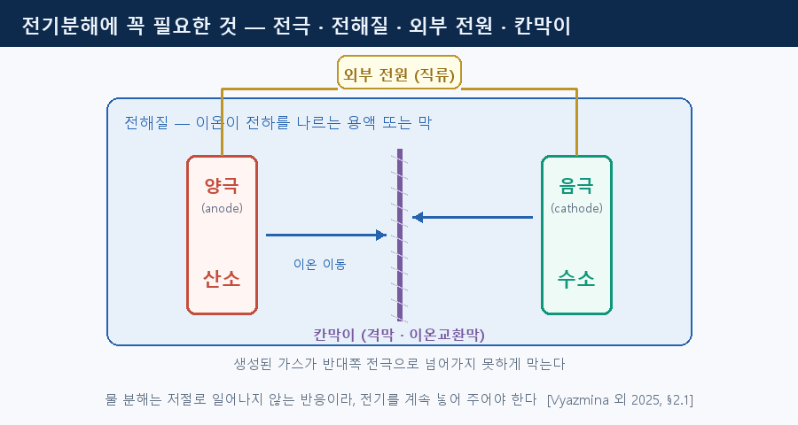
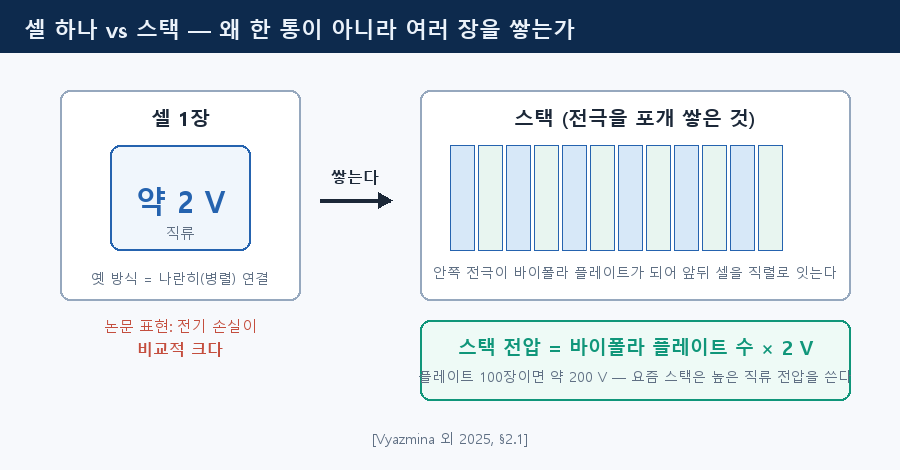
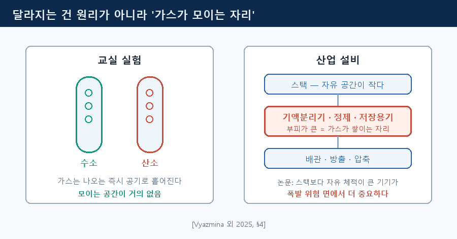
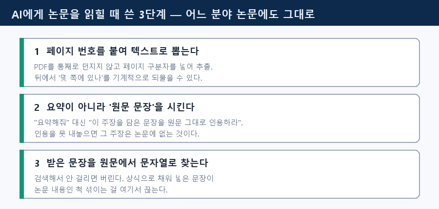

물에 전극 두 개를 꽂고 전지를 연결하면 한쪽에서 수소가 올라옵니다. 중학교 과학실 실험 그대로예요. 수전해 원리는 정말로 그것과 같습니다. 그런데 왜 산업 설비는 컨테이너 한 칸을 통째로 쓸까요.
국제에너지기구(IEA) 수소 협력과제 Task 43이 2025년에 낸 안전거리 지침 논문에 답의 절반이 있어요. 안전 문서인데 2장을 통째로 "전해조가 무엇인가"에 쓰거든요 [Vyazmina 외 2025].
1. 전기분해에 필요한 건 네 가지
논문의 정의부터. 전기분해란 전기(때로는 열)로 물을 수소와 산소 이온으로 분해하는 과정이며, "저절로 일어나지 않는(nonspontaneous)" 반응입니다 [Vyazmina 외 2025, §2.1]. 수소와 산소가 만나 물이 되는 쪽은 가만히 둬도 일어나죠. 그 반대라서 전기를 끊으면 그 자리에서 멈춥니다.
필요한 건 전해질, 전극, 외부 전원 세 가지. 여기에 칸막이가 더해집니다. 이온교환막 같은 분리막인데, 만들어진 가스가 반대편 전극으로 넘어가지 못하게 막아요 [Vyazmina 외 2025, §2.1].

전해질이 필요한 건, 전극 사이에서 전하를 나르는 게 전자가 아니라 전해질이 공급하는 이온이라서입니다 [Vyazmina 외 2025, §2.1]. 운반책이 다르면 방식 이름도 달라져요.
| 방식 | 전해질 | 운전 온도 | 성숙도(TRL) |
|---|---|---|---|
| 알칼라인(AEC) | KOH 수용액 20~30% | 70~80 °C | 9 |
| PEM | 고체 고분자 양성자 전도막 | 약 80 °C | 9 |
| 음이온교환막(AEM) | 고체 OH⁻ 전도막 | 약 80 °C | 낮음 |
| 고체산화물(SOEC) | 산소이온 전도 세라믹 | 800 °C 초과 | 7~8 |
알칼라인은 실적이 가장 많고 1 MW 이상 대형에서 가장 저렴합니다. 고체막 없이 알칼리 용액이 이온 통로예요 [Vyazmina 외 2025, §2.1·§2.3].
2. 셀 한 장은 약 2 V, 그래서 쌓습니다
교실 실험과 갈라지는 첫 지점입니다. 전극 한 쌍이 만드는 최소 단위가 셀이고, 전극을 포개어 쌓은 것이 스택이에요. 안쪽 전극들이 바이폴라 플레이트가 되어 양 끝 전극을 직렬로 잇습니다 [Vyazmina 외 2025, §2.1].
왜 한 통에 크게 만들지 않을까요.
> 예전 설계에서는 스택의 전극들을 병렬로 연결했다. 현대식 스택은 높은 직류 전압(바이폴라 플레이트 수 × 2 V로 계산)을 요구하며, 단극(unipolar) 설계는 약 2 V 직류에서 작동하므로 전기적 손실이 비교적 크다. [Vyazmina 외 2025, §2.1]
플레이트 100장이면 스택 전압은 약 200 V. 한 장짜리를 크게 만들면 2 V에 머물고, 논문 표현으로 "전기적 손실이 비교적 크다"는 상태가 됩니다. 왜 커지는지까지는 논문이 적지 않아요.

3. 달라지는 건 원리가 아니라 '가스가 모이는 자리'
스택 혼자서는 아무것도 못 합니다. 논문은 부속 일체를 BoP(Balance of Plant)라 부르고 목록을 달아요. 산소/물 분리, 수처리, 수소/물 분리, 수소에서 산소 흔적과 수분을 걷어 내는 정제 [Vyazmina 외 2025, §2.2].
위험이 어디 있는지는 이렇게 정리합니다 [Vyazmina 외 2025, §4].
- 스택 자체는 자유 공간이 작아 폭발 위험 면에서는 덜 중요한 편
- 대신 자유 체적이 큰 기액분리기·정제 장치·저장 용기가 더 중요. 가스가 쌓이고 섞일 수 있어서
- 위험은 보유량에 비례해 커지고, 상시 걸린 높은 전압은 그 자체로 꾸준한 점화원이 된다
사고 기록도 같은 곳을 가리켜요. 1975년 영국 라포트 공장 폭발은 원인이 셀 스택 안에 있었는데 피해는 바깥에 몰렸습니다. 수소가 13% 넘게 섞인 곳은 산소측 분리 드럼이었고, 작업자 한 명이 사망했어요 [Vyazmina 외 2025, §7].
시험관에서는 가스가 나오는 즉시 흩어집니다. 산업 설비는 모으고, 말리고, 압축하고, 저장하죠. 수전해 원리는 그대로인데 가스가 모여 앉을 공간이 새로 생기는 겁니다.

4. 이 논문을 AI에게 읽힌 방법
도구 이야기입니다. 어느 분야 논문에도 그대로 씁니다.
1. 페이지 구분자를 붙여 텍스트로 뽑는다. PDF를 통째로 던지지 않고 === PAGE n === 표시를 넣어 추출해요. 나중에 "몇 쪽인가"를 기계적으로 되물을 수 있습니다.
2. 요약 대신 원문 문장을 시킨다. "요약해 줘"가 아니라 "2장에서 전해질의 역할을 설명하는 문장을 쪽수와 함께 원문 그대로 붙여라"처럼 묻습니다. 인용을 못 내놓으면 그 주장은 논문에 없는 거예요.
3. 받은 문장을 원문에서 문자열로 찾는다. 검색해 안 걸리면 버립니다.
이 3단계가 실제로 걸러낸 게 있어요. 이 글에서 가장 쓰고 싶었던 문장은 "순수한 물은 전기가 잘 통하지 않아서 전해질을 넣는다"였습니다. 그럴듯하죠. 그런데 이 논문에 그 문장은 없어요. 적힌 건 "전하 운반은 전해질이 공급하는 이온이 한다"까지고, 순수한 물이 전기를 통하느냐는 한 줄도 없어요. 그래서 1장을 논문이 쓴 범위에 맞춰 다시 썼습니다.
셀 전압도 같습니다. 교과서에 흔한 1.23 V 같은 숫자는 이 논문에 없어요. 있는 건 "약 2 V"뿐이라 본문에도 그것만 남겼습니다.

5. 이 논문이 답하지 않는 것
교과서가 아니라 안전거리 방법론 문서라, 전해조 설명은 배경이고 전기화학 이론은 얕습니다. 공백도 스스로 인정해요. 30명 넘는 참여자 설문에서 전 세계에 통용되는 의무 규정이 없다는 점이 지적됐고, 피해 기준이 나라마다 제각각이었습니다 [Vyazmina 외 2025, §3.2]. 2020년 유럽 워크숍 회의록은 부분부하 시험 요구사항이 표준에 비어 있다고 적고요 [FCH 2 JU 2021].
6. FAQ
Q. 수전해와 물의 전기분해는 다른 말인가요?
같은 현상입니다. 논문도 electrolysis 하나로 써요. 다만 '수전해'는 수소를 제품으로 뽑는 설비 전체를 가리키는 쪽에 가깝습니다.
Q. 산소는 어디로 가나요?
여러 설계에서 산소는 부산물이라 대기로 방출합니다. ISO 22734-1 요건을 따라야 한다고 논문이 명시해요 [Vyazmina 외 2025, §2.2].
Q. 알칼라인과 PEM 중 뭐가 낫나요?
논문은 우열을 매기지 않아요. 알칼라인이 PEM보다 제조 비용이 낮다는 것까지만 적습니다 [Vyazmina 외 2025, §2.3].
---
원리는 교실 실험 그대로고, 규모가 커지며 새로 생기는 건 가스가 모여 앉을 공간입니다.
다음 편은 알칼라인·PEM·AEM이 왜 갈라졌는지 읽어 볼게요. 여러분은 수소 이야기에서 효율과 안전 중 어느 쪽이 먼저 궁금하세요?
> 출처 ① Vyazmina, E. 외 18인 (2025). IEA TCP TASK 43 – Recommendations for Safety Distances Methodology for Alkaline and PEM Electrolyzers. *Hydrogen Safety*, 2(1), 47–67. DOI 10.58895/hysafe.18
> 출처 ② Azkarate, I., Jordan, T., Moretto, P. (2021). Minutes of the FCH 2 JU Workshop on Safety of Electrolysis, 18 Nov 2020.
> 본문 그림은 논문 도표 전재가 아니라 개념을 직접 그린 것입니다.
→ 논문과 도면을 AI에게 읽히는 기록은 [makefield.ai](https://makefield.ai)에 모읍니다.